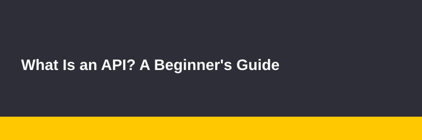

What Is an API? A Beginner's Guide

A plain-language introduction to APIs, how apps talk to each other, and why developers rely on them every day.
An API (Application Programming Interface) is a set of rules that lets one piece of software ask another for data or actions.
Think of a restaurant: you (the app) tell the waiter (the API) what you want, and the kitchen (the server) prepares it.
Next, read How a Website Loads in Under a Second to see where APIs fit into loading a web page.